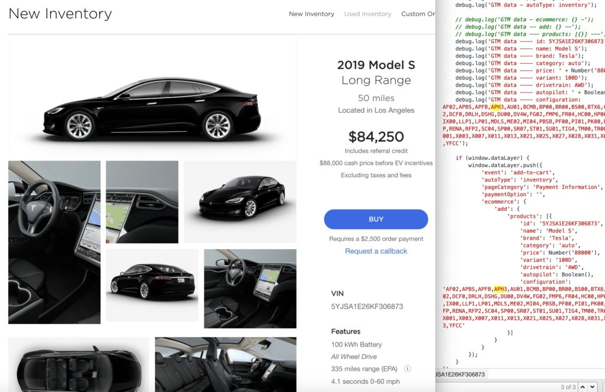

Behind the Scenes: The Code
Code
Modern vehicles contain approximately 100 million lines of code. This number will only increase with time. Vehicles are predicted to have around 300 million lines of code by 2030.
Errors in Code
In the average industry, there are around 15-50 errors per 1000 lines of code. The errors have received enough recognition that they now have their own units, defects per KLOC (1000 lines of code). Since vehicles contain around 100 million lines of code, using the predicted lowest average of defects per KLOC, around 1,500,000 errors are expected to be found.